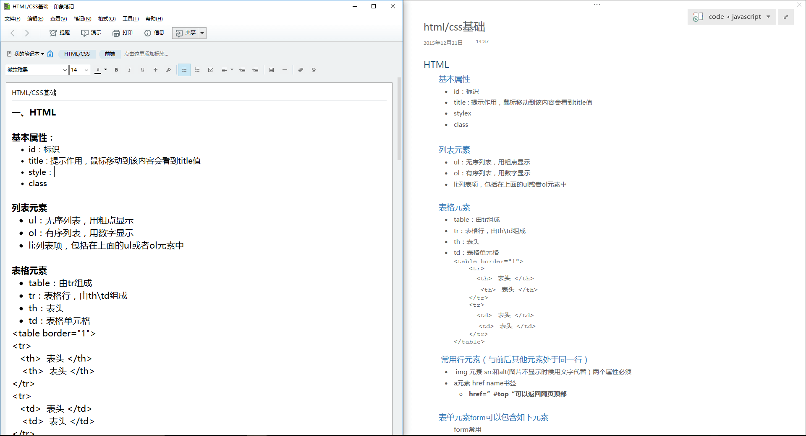
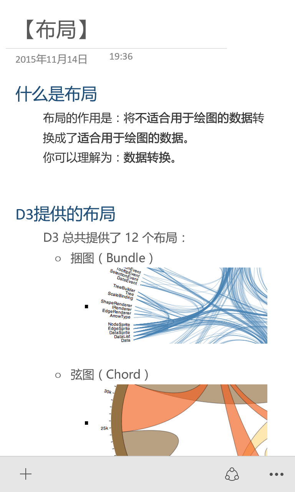
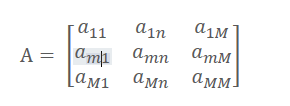
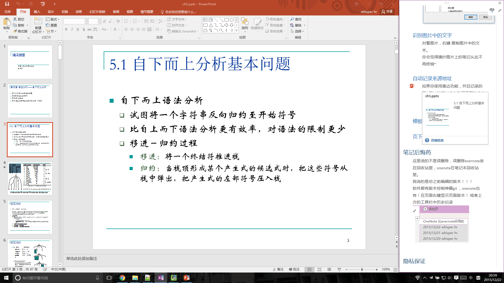
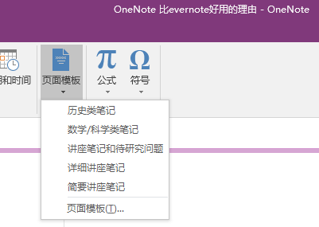
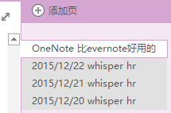
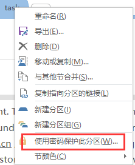

用了许久的onenote,现在博主正在把evernote迁移到onenote上。
了解了onenote的好处，就越发觉得这两个不是一个级别的东西..... ## 更舒爽的阅读体验
下面是evernote和onenote的对比 evernote已经尽力的排版了，而onenote轻松就可以达到右图效果。而排版的差别带来的阅读感受是差别很大的。 
折叠
如图，不需要的东西直接折叠起来，只看自己当前要看的内容。支持按标题1,2,…..标题6折叠，层次分明。
缩放
onenote支持ctrl+鼠标滚轮缩放,可自由调整比例，可大可小。
移动适配
博主看了看手头上的lumia 1020，身为windows 10 mobile的用户，首推onenote。evernote做得和啥似的。 多么漂亮的体验显示~ 
其实你按ctrl + alt +D 同样的会发现可以自动适应大小。
除非：
- 图片尺寸你拉太大
- 当前输入的位置上右边还有一栏笔记
更方便的写作方式
随处可以记录笔记
就像一个个文本框一样，随便放置
快捷键
为什么markdown用起来那么舒服简单的语法，就可以排版好，onenote可以用快捷键来实现！（虽然比markdown复杂一点）一个ctrl + alt + 1 就是 一级标题 ctrl + B 加粗字体 等等
格式刷
有这玩意，排版方便极了。类似的格式，轻轻的ctrl + shift + v粘贴一下格式~舒服
手写笔记
有人为了onenote买了surface 我会乱说？
有了触控笔，爱涂鸦就涂鸦，爱写就写~
公式
onenote的编辑器强大，可以自由的编辑和插入公式。 
笔记互相链接
比如，我在笔记本A里想引用笔记B里面的，ctrl + k无压力好么！
识别图片中的文字
什么，PDF是扫描版，你复制不下来，在辛苦的码字？ 截个图，粘贴到onenoe, 对着图片，右键-复制图片中的文本。 ctrl + v 一切搞定 你会觉得摘抄图片上的笔记从此不再烦恼~
自动记录来源地址
如果你使用靠边功能，并且记录的是office的话，会自动记录下这个文件的地址。鼠标移动到地址上还会给出预览图！！！  （你可以看到使用靠边停靠而且还自动适应了宽度。） 如果是网页上的话，会自动记录来源的URL以后你想看看来源地址，是不是很方便吖
模板
onenote也是有模板的！！！你怕不怕。 在插入-页面模板里 
页下分页
层次分明:
笔记后悔药
这里说的不是误删除，误删除evernote放在回收站里，onenote在笔记本回收站里。 我说的是你之前编辑的版本！！！ 软件都有版本控制神器git ，onenote也有！在页面右键显示页面版本！ 或者上方的工具栏中历史纪录 
隐私保证
分区-右键-使用密码保护此分区，再也不用担心被人偷看日志了。 需要注意的是密码忘记了貌似是找不回来的。。。。 